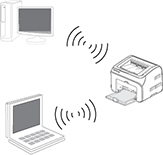
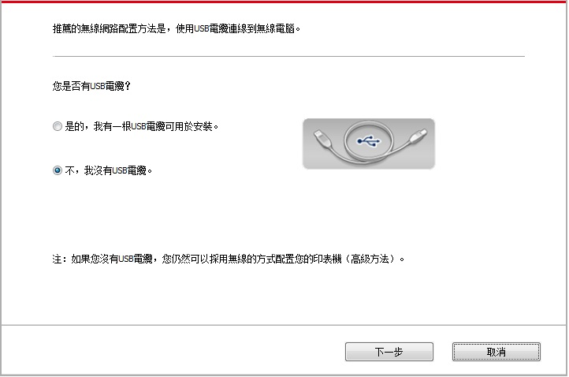

5.無線網路設定（適用於Wi-Fi機型）
根據型號，擁有 Wi-Fi 列印功能的印表機型號，支援基礎結構連接模式和 Soft-AP，兩種無線網路連接類型，通常電腦和印表機之間每次只能有一個連接。若您在無線網路設置過程中遇到問題，請參閱 第5.3章 無線網路設定常遇問題。
 |
基礎結構模式：通過路由器與無線設備連接 1.接入點（無線路由器） 2.無線網路印表機 3.通過無線網路連接至接入點的電腦 4.通過網線連接至接入點的電腦 |
|
 |
Soft-AP 無線電腦與無線設備直接連接。 |
5.1.基礎結構模式
您可以通過接入點（無線路由器）作為媒介，將電腦和印表機連接在一起。接入點（無線路由器）連接分為無線網路配置工具和Wi-Fi Protected Setup（WPS）配置兩種方式。
重要：在進行無線網路安裝前，必須瞭解您的接入點（無線路由器）的網路名（SSID）和密碼,在無線網路配置時需要使用。如果無法確定，請諮詢您的網路系統管理員或接入點（無線路由器）製造商。
5.1.1.無線網路配置工具
若您的電腦已安裝驅動並連接過無線網路，但無線網路發生變更，可以通過無線網路配置工具重新配置。
5.1.1.1.前期準備事項
1.接入點（無線路由器）。
2.已連接到網路的電腦。
3.具有無線網路功能的印表機。
5.1.1.2.無線網路配置工具配置方法
1.在電腦中調出無線網路配置工具。
1）Windows系統：點擊電腦“開始”功能表－“所有程式”－“Pantum”－“產品名稱”－“無線網路配置工具”。
2）Mac系統：點擊電腦Finder功能表列“前往”－“應用程式”－“Pantum”-“Utilities”－“Wireless Network Configuration Tool”。
2.使用USB連接線連接配置。 在以下界面，選擇“是的，我有一根USB電纜可用於安裝”。點擊“下一步”。
2.1電腦已連接至無線網路。
1）無線網路配置工具預設選擇當前電腦已連接的無線網路，按照介面提示完成配置。
附註： |
• 您所選擇的網路名（SSID）應與電腦連接的接入點（無線路由器）的網路名（SSID）一致。 |
2）需要連接其他無線網路請勾選“否”配置其他無線網路，按照介面提示完成配置。
附註： |
• 目前，印表機支援的安全模式有三種：無、WEP和WPA/WPA2。 1)無：未使用任何加密方式。 2)WEP：通過使用WEP（有線等效加密），以安全金鑰發送和接收資料。WEP金鑰適用於64和128位元加密網路，可同時包含數位和字母。 3)WPA/WPA2：是Wi-Fi保護接入預共用金鑰，它通過使用TKIP或AES加密（WPS－Personal）將無線設備與接入點進行連接。WPA/WPA2使用長度介於8-63個字元之間的預共用金鑰（PSK）。 • “顯示密碼”預設為不勾選，若勾選，所輸入的密碼將明文顯示。 |
2.2 電腦未連接至無線網路。 在以下介面，輸入接入點（無線路由器）的網路名SSID（SSID區分大小寫）及密碼，按照介面提示完成配置。
附註： |
• 如果您不清楚接入點（無線路由器）的網路名（SSID），點擊“列印無線網路資訊頁”可查看你需要的接入點（無線路由器）的網路名（SSID）。 • 無線網路配置完成後，若印表機不能正常使用，請重新安裝驅動。 |
3.使用WPS連接。 在以下介面，選擇“不，我沒有USB電纜”。點擊“下一步”。

1）使用WPS方式，執行以下步驟，從印表機上啟動無線網路。（WPS具體配置，請參閱第5.1.2章）
2） 可根據印表機上的Wi-Fi指示燈狀態，判斷印表機是否連接成功。若配置失敗，請點擊“上一步”，重新配置；若配置成功，請點擊“完成”按鈕，完成配置。

附註： |
• 無線網路配置完成後，若印表機不能正常使用，請重新安裝驅動。 |
5.1.2.Wi-Fi Protected Setup（WPS）配置
如果接入點（無線路由器）支援Wi-Fi Protected Setup（WPS），則可以分別按下印表機控制台上的Wi-Fi按鍵和接入點（無線路由器）上的WPS按鍵，從而將印表機連接到無線網路。
5.1.2.1.前期準備事項
1.接入點（無線路由器）支援Wi-Fi Protected Setup（WPS）。
2.具有無線網路服務的印表機。
5.1.2.2.Wi-Fi Protected Setup（WPS）配置方法
1.開啟印表機和接入點（無線路由器）的電源。
2.確保印表機處於就緒狀態。
附註： |
• 若印表機進入休眠狀態，按下印表機控制台的任意按鍵，印表機即被喚醒。 |
3.按下印表機控制台上的“Wi-Fi”鍵超過2秒，彈出“Wi-Fi連接”介面，選擇“WPS連接路由”。
4.在2分鐘內，按下接入點（無線路由器）上的“WPS按鍵”，然後鬆開。
5.接入點（無線路由器）與印表機開始進行無線網路連接，印表機的Wi-Fi燈藍燈閃爍。連接成功後印表機的Wi-Fi燈藍燈常亮。
若超過2分鐘沒有建立好連接，印表機返回就緒狀態，Wi-Fi燈滅，Wi-Fi Protected Setup（WPS）連接失敗。若需要重新連接，請重複以上第3-4步驟。
附註： |
• Wi-Fi Protected Setup（WPS）連接成功後，若您希望通過無線網路方式進行列印，請安裝驅動。 |
5.1.3.如何關閉已連接的Wi-Fi網路
按照上述步驟完成基礎結構模式的無線網路連接，已連接狀態控制台上的Wi-Fi燈將常亮，此時按住此按鈕2秒鐘以上，彈出“Wi-Fi連接”介面，選擇“斷開路由連接”，可斷開Wi-Fi連接（Wi-Fi燈將變為熄滅）。
5.2.Wi-Fi 熱點模式
您可以不使用接入點（無線路由），將無線網路功能的電腦與無線網路印表機建立連接。
5.2.1.前期準備事項
1.具有Wi-Fi熱點功能的印表機。
2.具有無線網路功能的電腦。
5.2.2.Wi-Fi熱點連接
連接印表機熱點前需先開啟印表機的Wi-Fi熱點功能。開啟方式為登錄內嵌Web伺服器，點擊“設置”-“無線設置”-“無線熱點”，將熱點基本狀態設置為“開啟”。
5.2.3. Wi-Fi 熱點設定方法
當印表機無線熱點處於啟動狀態時，使用者可以透過搜尋印表機無線熱點的方式，與其直接連接。無線熱點預設為開啟狀態，且預設密碼為 [12345678]，印表機實際的 SSID 和密碼，可透過 [列印 Wi-Fi 設定] 來列印 [Wi-Fi 設定資訊頁] 加以取得，連接後參照 Web 設定的方式即可完成設定。
5.3.無線網路設定常遇問題
1．未找到印表機
• 電腦、接入點（無線路由器）或印表機電源是否已開啟。
• 電腦和印表機之間是否已連接了USB連接線。
• 印表機是否支援無線網路連接。
2．網路連接時，找不到網路名（SSID）
• 檢查接入點（無線路由器）的電源開關是否已開啟。
• 印表機找不到您需要連接的接入點（無線路由器）的網路名 (SSID)，請檢查接入點的網路名（SSID）並嘗試重新連接。
• 每當接入點（無線路由器）的配置發生變化時，您必須重新設定印表機的無線網路。
3.連接失敗
• 請檢查接入點（無線路由器）和印表機的安全模式、密碼是否正確。
• 檢查印表機周圍的無線接收。如果路由器遠離印表機或中間有障礙，可能影響信號的接收。
• 關閉接入點（無線路由器）和印表機的電源，重新啟動後再進行配置。
4.如果在網路中使用印表機時出現問題，請檢查以下幾方面：
• 檢查防火牆軟體是否封鎖通信。如果電腦和印表機連接在同一網路中卻搜尋不到，可能是因為防火牆軟體封鎖了通信。請參閱防火牆軟體的使用者指南，將防火牆關閉，然後重新嘗試搜尋印表機。
• 檢查印表機IP位址的分配是否正確。您可以列印印表機的網路配置訊息頁來檢查IP位址。
• 檢查印表機和電腦是否在同一網路。如何判斷是否在同一網路，請參閱如下步驟：
1）如下所示，選擇“命令提示符”。
a. Windows 8/10系統：從開始螢幕選擇“搜索”按鈕，在搜索框中輸入“命令提示符”，按鍵盤“Enter”鍵。
b. Windows 7/Vista/XP系統：按一下“開始”功能表-“所有程式”-“附件”-“命令提示符”。
2）在彈窗中先後鍵入ping及您的印表機IP位址 ，按鍵盤“Enter” 鍵。
如：ping XXX.XXX.XXX.XXX（“XXX.XXX.XXX.XXX”為印表機IP地址）
3）如果視窗顯示往返時間，則說明您的印表機和電腦在同一網路。如果視窗未顯示往返時間，請參閱第5章重新給印表機配置無線網路。
附註： |
• 有關接入點（無線路由器）的資訊，請參閱其使用者指南或諮詢其製造商。 |